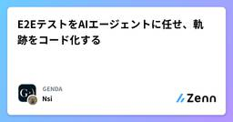
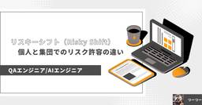
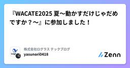
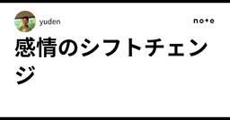
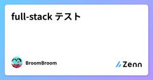

直近1週間の更新
8/29 (金)
巨人に学ぶテストコードアンチパターン  Zennの「Test」のフィード
Zennの「Test」のフィード
はじめにこんにちは、楽天の日暮です。普段は主にJavaを使ったシステムの開発に携わっています。日々の開発業務の中で、テストコードのレビューを したりされたりする機会は非常に多いと思います。みなさんはテストコードの書き方はどのように勉強してきたでしょうか？もちろん世の中にはコーディングとテストに関する名著はたくさんありますが、私が勧める最も実践的かつ読みやすいものの一つとして、Google Testing Blogをお勧めします。Google Testing BlogはGoogleが記事投稿しているテストに関してフォーカスしたブログで、一つ一つの記事は短いので読みやすくトピッ...
1日前
JSTQB(ソフトウェアテスト技術者資格認定組織)、20周年記念カンファレンスにて「インフォメーションセッション」を追加開催 特定非営利活動法人ソフトウェアテスト技術振興協会【プレスリリース】 by PR TIMES
[特定非営利活動法人ソフトウェアテスト技術振興協会][画像: https://prtimes.jp/i/54604/46/resize/d54604-46-ce54ec1febb6e4ab026e-0.jpg ]JSTQB（ソフトウェアテスト技術者資格認定組織）は、2025年10月10日（金）に開催予定の「20周年記念 JSTQB カンファレンス...
1日前

E2EテストをAIエージェントに任せ、軌跡をコード化する Zennの「Test」のフィード
!あくまで自社プロダクトのテスト効率化のために行なっており、この手法を他社サービスに向けて使ってはいけません。 はじめにGENDA IDの開発にあたり、開発チームでは必ず以下のテストを手動で行っていました :新規登録導線既存ユーザーのログイン導線既存ユーザーのパスワード変更導線導線の途中にはメールアドレスの認証コード入力や電話番号の認証コード入力が存在します。E2Eテストはこの辺を上手く織り込んでいく必要がありました。 AIエージェントがブラウザを操作出来るようになったbrowser-useやPlaywright MCP、Chrome MCP Serverなど...
1日前
JSTQBを受けてわかった、テストをちゃんと学ぶ意味  ソフトウェアテストタグが付けられた新着記事 - Qiita
ソフトウェアテストタグが付けられた新着記事 - Qiita
はじめにスクラム開発をしていると、開発のうちテストにかける時間が長いテスト設計が経験頼みになりがちといった課題を感じませんか？私も同じような悩みがあり、テストに関して体系的に学びたいと思い、JSTQB Foundation Levelを受けました。この...
1日前
カルチャーは“押し付けない”。 伝統と変革をつなぎ、次の成長をつくる人事の役割  PTW／ポールトゥウィン【公式】
PTW／ポールトゥウィン【公式】
前回の記事では、急速に変化する社会に適応すべく人事部門の変革に挑む執行役員 人事本部長 広瀬の人事に対する思考やポールトゥウィンでの挑戦への決意に迫りました。しかし、創業から30年を超える企業において、入社2年目の若手リーダーが単独で大きな改革を成し遂げることは現実的ではありません。企業の歴史と文化を深く理解するベテランたちとの協働こそが、真の変革を動かす力となります。特集の2回目となる本記事では、「変革の旗を掲げる」広瀬を支えるキーパーソンに注目。広瀬とともに人事を担う入社11年目の小野めぐみを迎え、伝統企業を動かす人事戦略を語ってもらいました。続きをみる
2日前
同値分割と境界値分析でテストケースを賢く減らす ソフトウェアテストタグが付けられた新着記事 - Qiita
京セラコミュニケーションシステムの要谷（かなめや）です。ソフトウェアテストに関することを業務としております。今回はテストケースを考えるときに使えるテクニックについてお伝えします。対象の読者今回の記事は実際にソフトウェアテストするときに 「全部のパターンを試すなんて...
2日前
Gemini CLIでゼロから作る！Playwright環境構築 テスト自動化メンバー｜日本ナレッジ株式会社
こんにちは！テスト自動化メンバーのS.Kです。私たちテスト自動化チームでは、AIを積極的に活用して日々の業務を効率化しています。今回は、その取り組みの一部として、Googleの新しいAIツール「Gemini CLI」を使って、テスト自動化フレームワーク「Playwright」の環境を簡単に構築する方法をご紹介します。続きをみる
2日前
【Go】Goのテストに入門してみた！ ~スライスとマップの比較テスト編~ Zennの「Test」のフィード
はじめに前回は「一時ディレクトリの作成」を見ていきました。今回は「スライスとマップの比較テスト」に入門します！前回の記事はこちら！ この記事でわかることGoの基底型の比較Goの複合型の比較複合型の比較方法 基底型の比較基底型とは、Goに組み込まれている基本的なデータ型のことを指します。int や string などが基底型に該当します。Goにおける基底型の比較には == を使います。例えば、以下のように使うことができます。main_test.gopackage mainimport ("testing")func TestInt(...
2日前
8/28 (木)

リスキーシフト（Risky Shift）集団になると、なぜ人はリスクを取るのか？ つーつー
QAエンジニアのつーつーです😁日々、Vibe codingをゲームのように楽しんでおります😊今回はリスキーシフトについて書きたいと思います。リスキーシフトって何？という方向けにめっちゃ簡単に伝えると、「赤信号！みんなで渡れば怖くない！」という考え方です続きをみる
2日前
脱・属人化のための「引き継ぎ設計」～ドキュメントとプロセスで実現するナレッジ共有術～  品質 | Sqripts
品質 | Sqripts
皆さん初めまして、QAコンサルタントのノブです。 私はこれまで、大手IT企業等の品質管理部門を長年担当し、様々なプロジェクトの商談判定・監査/監視・レスキュー対応・PMO支援・社内研修等を実施してきました。 その経験の中...The post 脱・属人化のための「引き継ぎ設計」～ドキュメントとプロセスで実現するナレッジ共有術～ first appeared on Sqripts.
3日前
8/27 (水)
「自己流」QAだった私が、「即戦力」より大切なことを教わったオンボーディング 3 Zennの「QA」のフィード
3 Zennの「QA」のフィード
はじめにこんにちは。MAIと申します。私のキャリアの大半は営業事務職でしたが、ユーザー側としてシステムの機能改善の打ち合わせに関わるようになったことをきっかけに開発分野に興味を持ち、QAの仕事を始めて3年になります。タイミングよくQAに挑戦する機会を得たものの、当時担当したプロダクトにQAの先輩は不在。開発者自身が実施していたテストを巻き取る形で、過去のテストケースを参考にした完全な「自己流」でのスタートでした。基本から学ぶ機会がないまま、「これが正解なのだろうか？」という違和感。新しく仲間が増えても、体系的な知識がないため、うまく教えることができず、技術やノウハウをチームと...
3日前
【Go】Goのテストに入門してみた！ ~一時ディレクトリの作成編~ Zennの「Test」のフィード
はじめに前回は「環境変数のセット」を見ていきました。今回は「一時ディレクトリの作成」に入門します！前回の記事はこちら！ この記事でわかることGoのテストで一時的ディレクトリを作成する方法T.TempDir() の特徴T.TempDir() 以外の一時ディレクトリ作成について Goのテストで一時ディレクトリを作るには？Goのテストで、一時的なディレクトリを作成したい場合は、T.TempDir() メソッドを使うことができます。これはGo 1.15で追加されたメソッドで、ドキュメントには以下のような記載があります。TempDir returns a ...
4日前
8/26 (火)
フロントエンドのテスト方針はプロダクトの状況に応じて定めるべきという話 Zennの「Test」のフィード
概要フロントエンドのテスト方針はプロダクトの状況に応じて決めるのが良いと思っているので、このことについて雑に書いてみたいと思います。理想形としては、Kent C. Dodds が示した Testing Trophy（静的・ユニット・インテグレーション・E2E の層を定義し、インテグレーションテストを厚めにする考え方）に寄せたいです。ただし現場にはプロダクトのフェーズやチームの事情があるため、Testing Trophy を土台にしつつ配分を調整するのが現実的だと考えています。たとえば、すでにリリース済みなのに自動テストがほとんど無い場合は、まず主要導線だけを確認する最小限の E2...
4日前

『WACATE2025 夏〜動かすだけじゃだめですか？〜』に参加しました！ Zennの「QA」のフィード
始めにWACATE2025 夏〜動かすだけじゃだめですか？〜というイベントに参加してきました。https://wacate.jp/workshops/2025summer/このWACATEというイベントは、テストエンジニアに向けのイベントではありますが、自分と同じようなWebアプリケーションエンジニアの方も参加していました。イベント参加の切っ掛けとしては、社内で参加したことがある人達による紹介と、ログラス内の開発フローの一環としてどこでもテストするという文化があります。https://zenn.dev/loglass/articles/dbd4fe36aa3169TDDを...
5日前
『WACATE2025 夏〜動かすだけじゃだめですか？〜』に参加しました！ Zennの「Test」のフィード
始めにWACATE2025 夏〜動かすだけじゃだめですか？〜というイベントに参加してきました。https://wacate.jp/workshops/2025summer/このWACATEというイベントは、テストエンジニアに向けのイベントではありますが、自分と同じようなWebアプリケーションエンジニアの方も参加していました。イベント参加の切っ掛けとしては、社内で参加したことがある人達による紹介と、ログラス内の開発フローの一環としてどこでもテストするという文化があります。https://zenn.dev/loglass/articles/dbd4fe36aa3169TDDを...
5日前
『WACATE2025 夏〜動かすだけじゃだめですか？〜』に参加しました！ Zennの「品質」のフィード
始めにWACATE2025 夏〜動かすだけじゃだめですか？〜というイベントに参加してきました。https://wacate.jp/workshops/2025summer/このWACATEというイベントは、テストエンジニアに向けのイベントではありますが、自分と同じようなWebアプリケーションエンジニアの方も参加していました。イベント参加の切っ掛けとしては、社内で参加したことがある人達による紹介と、ログラス内の開発フローの一環としてどこでもテストするという文化があります。https://zenn.dev/loglass/articles/dbd4fe36aa3169TDDを...
5日前
8/25 (月)

gpt-oss:20bでpromptfooのテストケースを試してみる Zennの「Test」のフィード
書き手・読み手のモチベーションgpt-ossをちょっと使ってみたいapache2.0なので、もしかしたら組み込みや自社利用もあるかももし使うとなった場合APIに比べて、アラインメントはどんな感じでされているのかせっかくなんで、CI的なテストも回していきたい、promptfooとか使ってみて promptfoohttps://www.promptfoo.dev/promptfooは、生成AIやLLMを評価・テストするためのオープンソースツールユーザーが用意したプロンプトや期待する出力をもとに、複数のモデルに対して同じ条件でテストを実施し、精度や一貫性...
5日前
【Go】Goのテストに入門してみた！ ~環境変数編~ Zennの「Test」のフィード
はじめに前回は「httptest」を見ていきました。今回は「環境変数のセット」に入門します！前回の記事はこちら！ この記事でわかることGoのユニットテストにおける環境変数のセットの仕方と T.Setenv の特徴Goのベンチマークテストにおける環境変数のセットの仕方と B.Setenv の特徴 ユニットテストで環境変数を設定するには？テストをする際に、環境変数に依存した処理をテストすることがあるかと思います。ユニットテストで一時的な環境変数を設定するには、Go 1.17から導入された T.Setenv を使います。T.Setenv のドキュメントには以下...
6日前
8/24 (日)

感情のシフトチェンジ yuden
私たちはプラスな感情をポジティブと、マイナスな感情をネガティブと表現します。そしてこの感情上下を日々コントロールし、時にはこの波にコントロールされています。ポジティブとネガティブは別である続きをみる
6日前

ソフトウェアテスト徹底指南書 〜開発の高品質と高スピードを両立させる実践アプローチ の感想 2 テストする人。
※本文にはほとんどふれていないエントリーです。 ソフトウェアテスト徹底指南書 〜開発の高品質と高スピードを両立させる実践アプローチ gihyo.jp という本が今年発売されました。 全43章というのに周囲がどよめいたとんでもない本です。 なんとか全部読み終わった（と言えないので、ページを全部めくったの方が近いと思う）ので、感想エントリー 一言でいうと、著者の井芹洋輝さん（私はいつも いせりんと呼んでいるので以降いせりんで）は国宝な本を出しちゃったな。って感想。 いせりんは、尊敬するソフトウェアテスト技術者の一人で、彼の素晴らしさは、圧倒的な知識量と探究心と守備範囲の広さ、そして丁寧で誠実、誰に…
6日前

full-stack テスト Zennの「Test」のフィード
前提Fullstack: FEとBEをそれぞれ開発してるBEはclean architectureに準拠API定義書を満たす形で、FEとBEは実装を進めるunit test各レイヤーで、エッジケースも含めてビチビチにprogramでテストするホワイトボックス現在の形のスナップショットを撮るような目的integration testBE、FE内でそれぞれレイヤーを接続して、機能することを確認するブラックボックス。実際にリクエスト投げて動くかどうかみる。この時点で、理論上は、FEとBEを繋げれば全てがうまく動くただ、実際は、FEとBEチームで仕様の捉え方に...
7日前